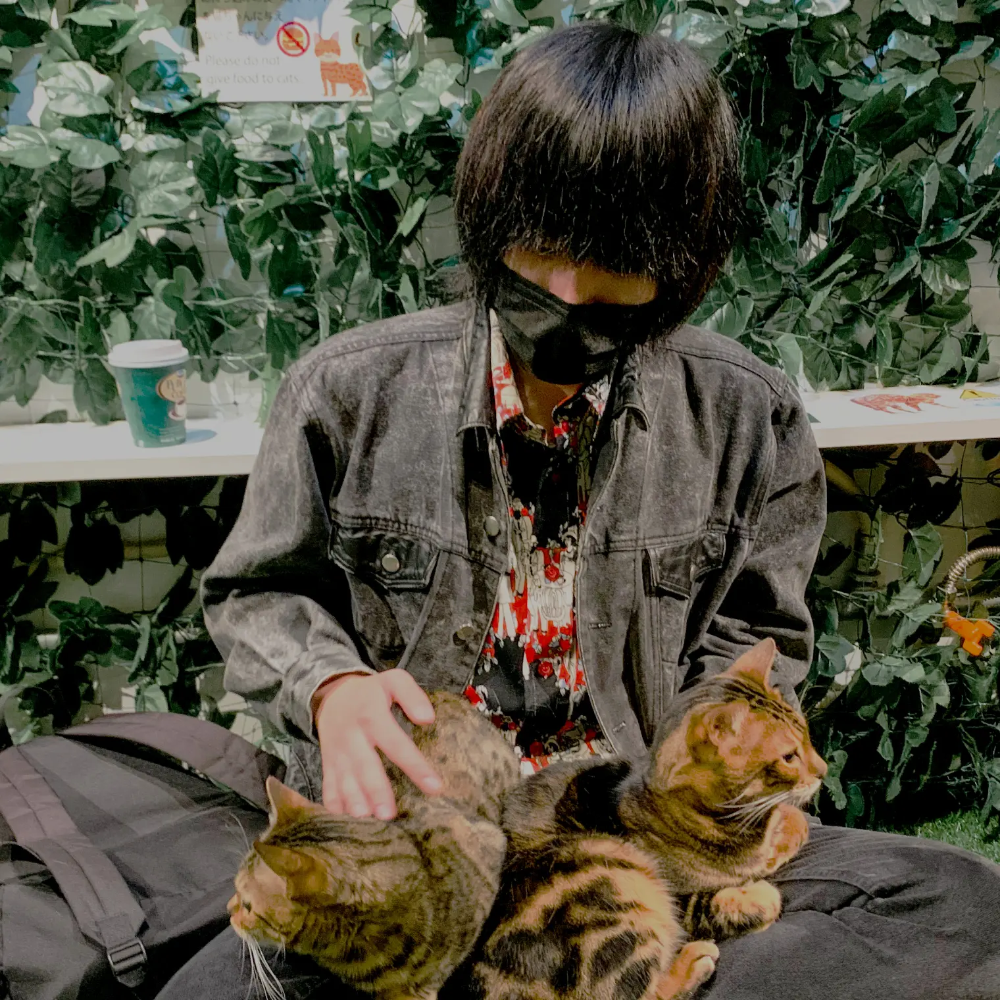
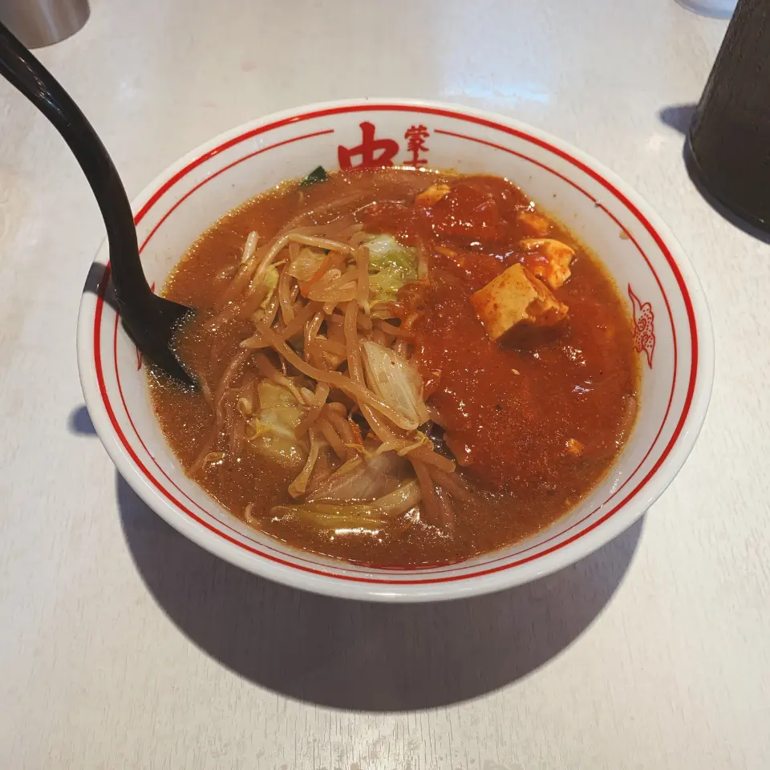
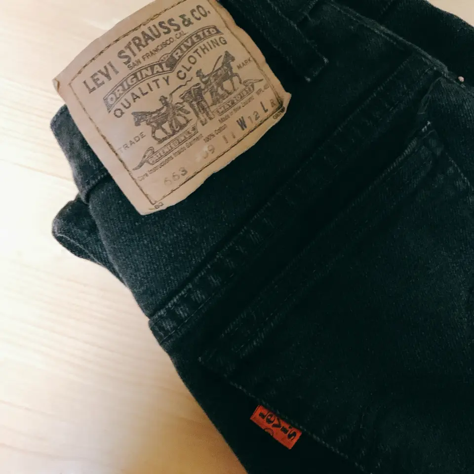
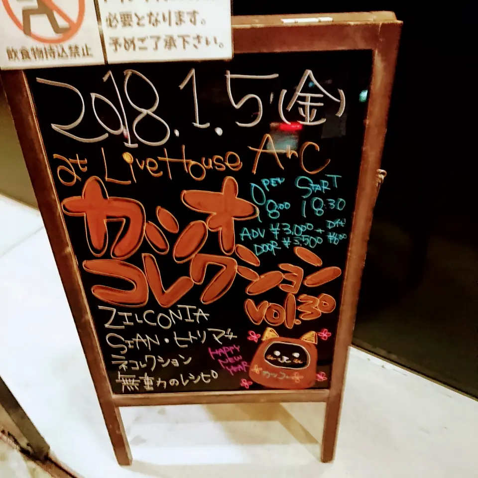

Profile

竹村 陽之介/Akinosuke Takemura
1999年滋賀県生まれのA型。
小学生の時にJimdoを使ってドット絵を展示するWebサイトを作っていたのがきっかけでWeb制作に興味を持ちました。
2021年4月に京都コンピュータ学院鴨川校に入学し、デザインも出来るフロントエンドエンジニアになることを目指しデザインとWeb制作について学んでいます。
今は授業と並行しつつ独学でもJavaScriptの勉強に励んでいます。
- HTML5/CSS3(SCSS)/JavaScript
Skill
- Photoshop/Illustrator/XD
Tools
- Windows/Macともに使用経験あり
- 色彩検定2級/実用英語技能検定準2級
Other
Like
-

Foods
ご飯は食べるのも作るのも大好きです。
辛い料理がめちゃくちゃ好きでよく食べます。最近はブルダックポックンミョンを食べることが多いです。作る方に関しては何でも作ります。和食（きんぴらや筑前煮）が得意です。 -

Clothes
高校生の頃から興味を持ち始めて気付いたら古着の沼にハマっていました。写真はリーバイスの663。検索しても同じものがヒットしないあたり、かなりの珍品なのかなと思って大切にしています。こういった変わった服に出会えた時、すごくドキドキします。
-

Music
メロコア、ロック、メタルとギターがかっこいい音楽がとても好きです。サブスクリプションが主流の今でもCDが大好きです。コロナが蔓延る前はライブハウスにもよく足を運んでいました。
Interested
今したいこと、これからしたいことをnoteにまとめています。
リンク先からご覧いただけます。
Contact
Chatwork
consistency
email
nico19990921@gmail.com